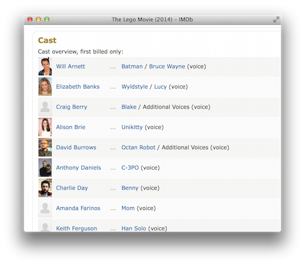
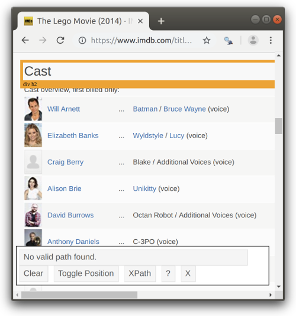
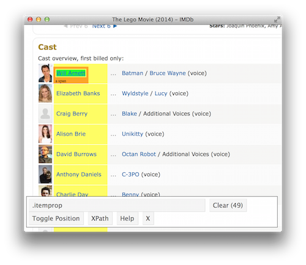
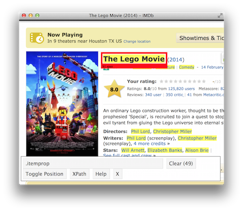
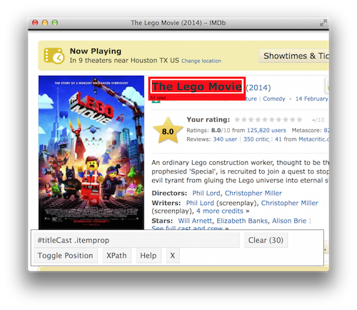

SelectorGadget is a JavaScript bookmarklet that allows you to interactively figure out what css selector you need to extract desired components from a page.
To install it, open this page in your browser, and then drag the following link to your bookmark bar: SelectorGadget.
To use it, open the page
Click on the element you want to select. SelectorGadget will make a first guess at what css selector you want. It’s likely to be bad since it only has one example to learn from, but it’s a start. Elements that match the selector will be highlighted in yellow.
Click on elements that shouldn’t be selected. They will turn red. Click on elements that should be selected. They will turn green.
Iterate until only the elements you want are selected. SelectorGadget isn’t perfect and sometimes won’t be able to find a useful css selector. Sometimes starting from a different element helps.
For example, imagine we want to find the actors listed on an IMDB movie page, e.g. The Lego Movie.
Navigate to the page and scroll to the actors list.

Click on the SelectorGadget link in the bookmarks. The SelectorGadget console will appear at the bottom of the screen, and element currently under the mouse will be highlighted in orange.

Click on the element you want to select (the name of an actor). The element you selected will be highlighted in green. SelectorGadget guesses which css selector you want (.itemprop in this case), and highlights all matches in yellow.

Scroll around the document to find elements that you don’t want to match and click on them. For example, we don’t to match the title of the movie, so we click on it and it turns red. The css selector updates to #titleCast .itemprop.

Once we’ve determined the css selector, we can use it in R to extract the values we want:
library(rvest)
#> Loading required package: xml2
#> Registered S3 method overwritten by 'rvest':
#> method from
#> read_xml.response xml2
html <- read_html("http://www.imdb.com/title/tt1490017/")
cast <- html_nodes(html, "#titleCast .itemprop")
length(cast)
#> [1] 0
cast[1:2]
#> {xml_nodeset (0)}Looking carefully at this output, we see twice as many matches as we expected. That’s because we’ve selected both the table cell and the text inside the cell. We can experiment with selectorgadget to find a better match or look at the html directly.